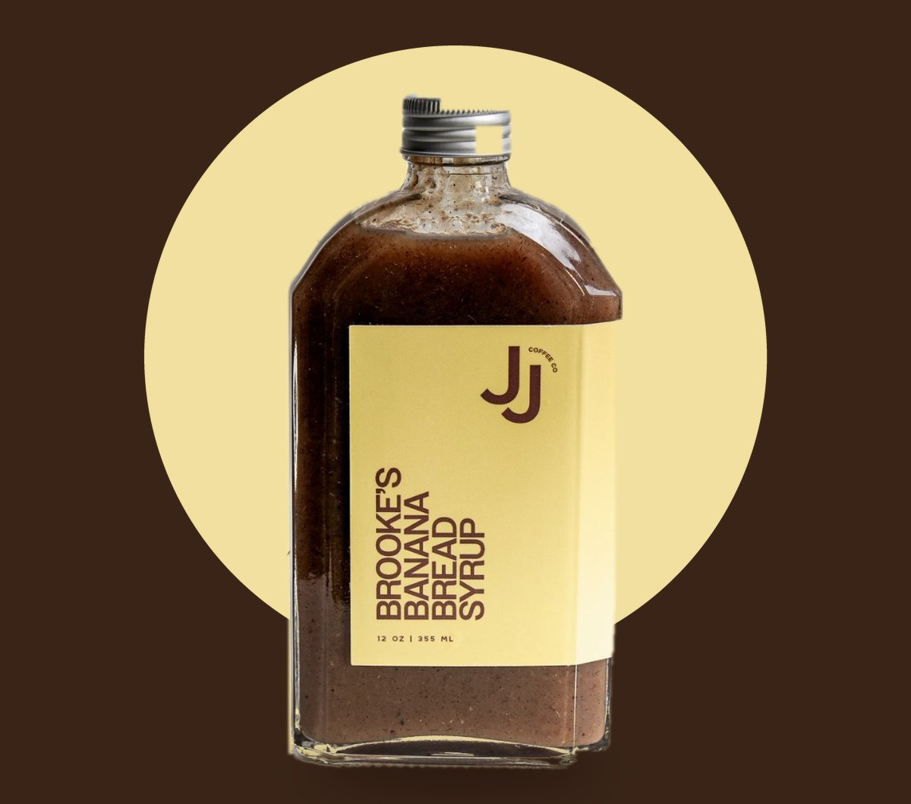
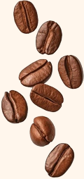
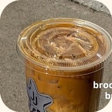
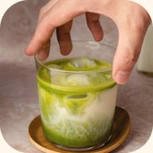
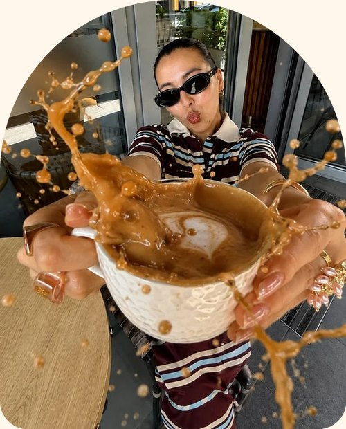
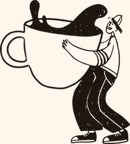
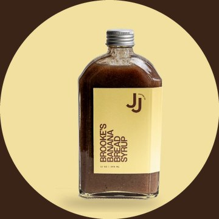
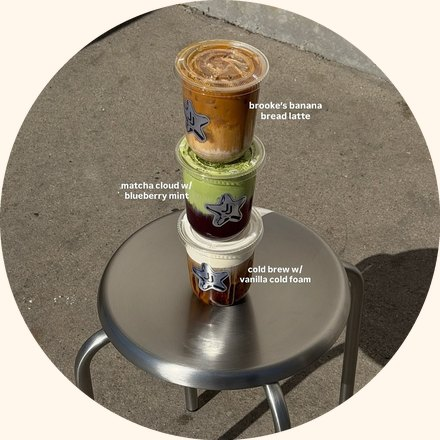
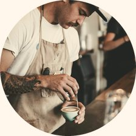

|
 Syrups ✶ Coffee & Matcha ✶ Find a shop |
How do you
take it? |
 |
Tap yours. Thursday’s email follows your answer. |
|
One bottle. Four slow sips. |  |
| Banana bread latte Espresso, 1 tbsp, steamed milk. Coffee |
|  | Iced banana bread latte Espresso, 1 tbsp, cold milk, ice. Coffee |
|
| Banana bread steamer 1½ tbsp, steamed oat milk. No coffee |
|  | Banana bread matcha Matcha, 1 tbsp, milk, ice. Matcha |
|
|
 | 12 oz · barista-grade Make two. One for you. One for your person.  |
|
|
 ★★★★★ “It REALLY tastes like banana bread.” ✓ Verified buyer · 4.9★ from 136 reviews Shop banana bread → |
|
Thursday Bring your person.
We’ll pour. |  |
|
 | Take your time, The JJ’s bar team |
|
|
Your morning latte, but perfect. Barista made in Utah ✶ As seen in Times Square You joined the JJ’s list at jjcoffee.co. Unsubscribe or choose what you get.
JJ Coffee Co · 570 E Park Ave, Orem, UT 84097
Spec work by Angel Phommachan. Not affiliated with or commissioned by JJ Coffee Co, and never sent. |